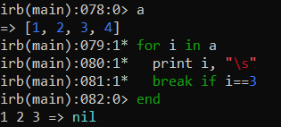
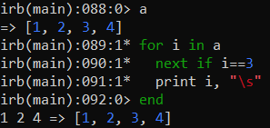
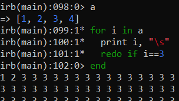

Altering Structured Control Flow
It is possible to alter the behavior of iterators and structured statements (while, until, for,...) using statements like:
•
break transfers the control out of the loop or the iterator where it is contained. If true, the next operation is the first statement after the end keyword
•
next It ends the current iteration and jumps to the next one. All the instructions that follow are not executed.
It works the same way of the continue statement used in Java or C.
•
redo It restarts the
current iteration from the first instruction in the body
